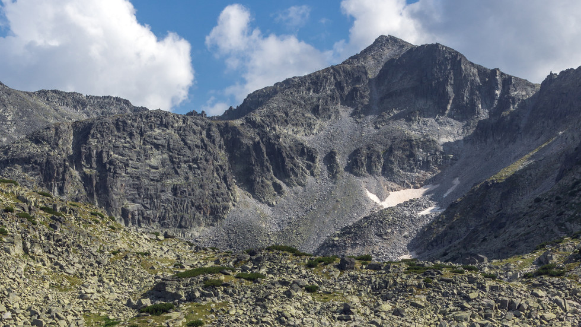
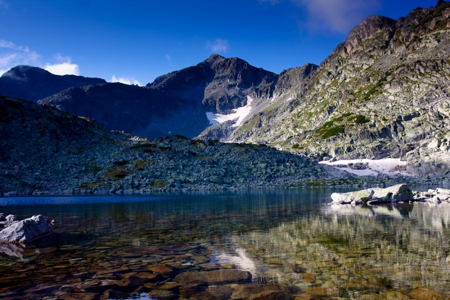

Bulgaria
Връх Мусала - Рила

Мусала е най-високият връх на Балканския полуостров - 2925м. В превод името му означава "пътят към Бог". Разположен е в Национален парк Рила, а в подножието му се намира най-големият зимен курорт у нас - Боровец. В района се срещат и интересни растителни видове като македонския бор и българската ела. Първенецът на Балканите е идеален за алпинистки подвизи. Според писмено свидетелство, първият човек стъпил на върха е цар Филип II - бащата на Александър Велики.Как да покорим Мусала?

Приготвяме си екипировката, взимаме си няколко шоколада, вкусни сандвичи и вода. Походът към върха ще ни отнеме около 3-4 часа. Хващаме лифта от Боровец за Ястребец, който само за 25 минути ще ни изкачи на 2369м в Рила планина. Това е идеалното място да се полюбуваме на приказните гледки към върховете Дено, Иречек, Малка Мусала, Мусала и Алеко.